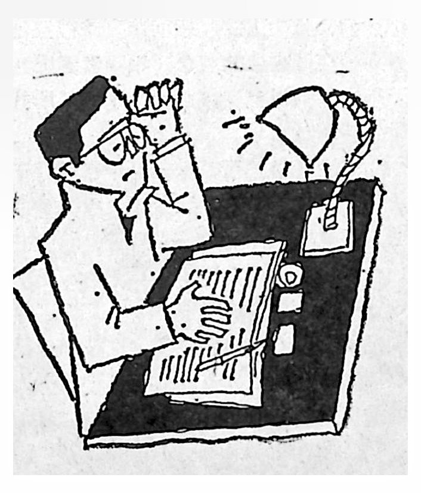

佚名 《人事》1987年第2期（总第17期），第47页
心绪（插图）
Agitation (illustration)
- Passage illustrated
他重又伏在桌子上，用劲地睁大眼睛看起来。可是，见鬼！纸上一行行的字，都交织在一起，不多会儿，又分开来……唉！这是怎么了？他只觉得心绪更加烦乱，便用劲在自己头上有板有眼地捶了几下……
He bent over the desk again and stared hard at the page. But, damn it! The lines of characters on the paper all tangled together, and a moment later came apart again… Ah! What was wrong with him? He felt his thoughts grow ever more tangled, and he beat himself on the head, hard and rhythmically, a few times…Closing lines of the short story 心绪 (“Agitation”) by Du Shubo, p. 48. 杜曙波《心绪》（小说）结尾，第48页
- Description
- Illustration for the story: a bespectacled county official at his desk, under a lamp, beats his own head with his fist over the draft in front of him.
- Note
- In the story, the hard-working education chief Wu Chunzhang is branded “Secretary Lin's man” as soon as his patron is transferred; his colleagues abandon him to court the new secretary's favourites.
- Artist
- Unattributed 佚名
- Published in
- 《人事》1987年第2期（总第17期）, p. 47
- Themes
- Connections (guanxi) · Story illustrations

Cite
Unattributed, “心绪（插图）” [Agitation (illustration)], Renshi (Personnel) 《人事》, 1987, no. 2, p. 47.